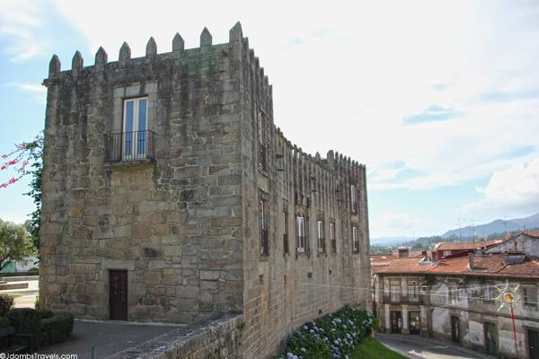
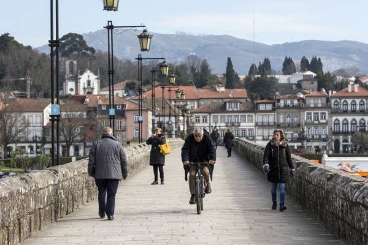
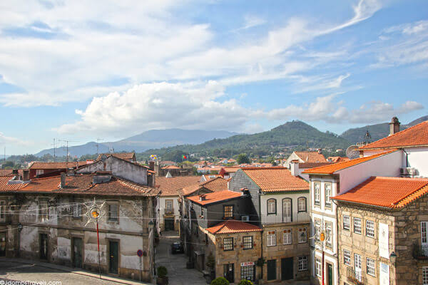
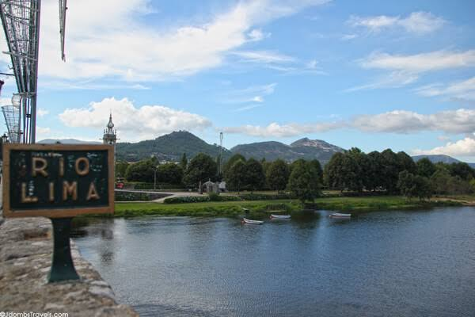
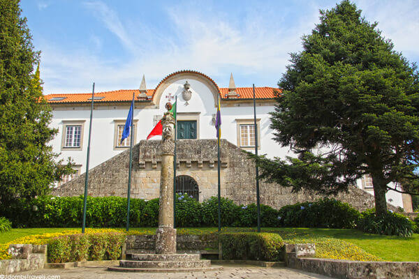

Multimédia
Nesta página encontra conteúdos multimédia.
Fotografias







Vídeo
Poesia
Às margens serenas do rio Lima,
ergue-se a vila cheia de história,
entre pontes, jardins e beleza,
Ponte de Lima guarda a sua memória.